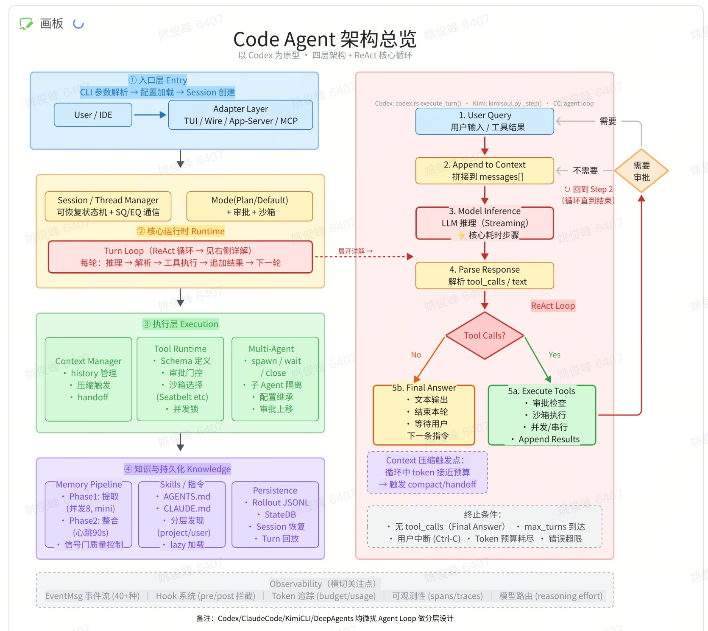
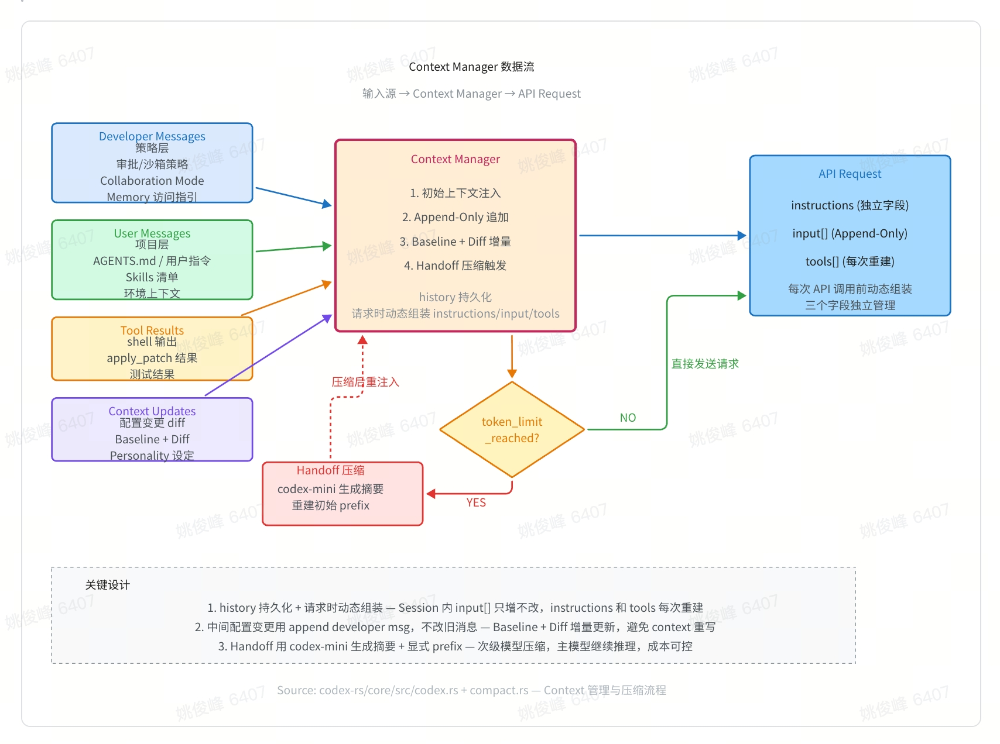
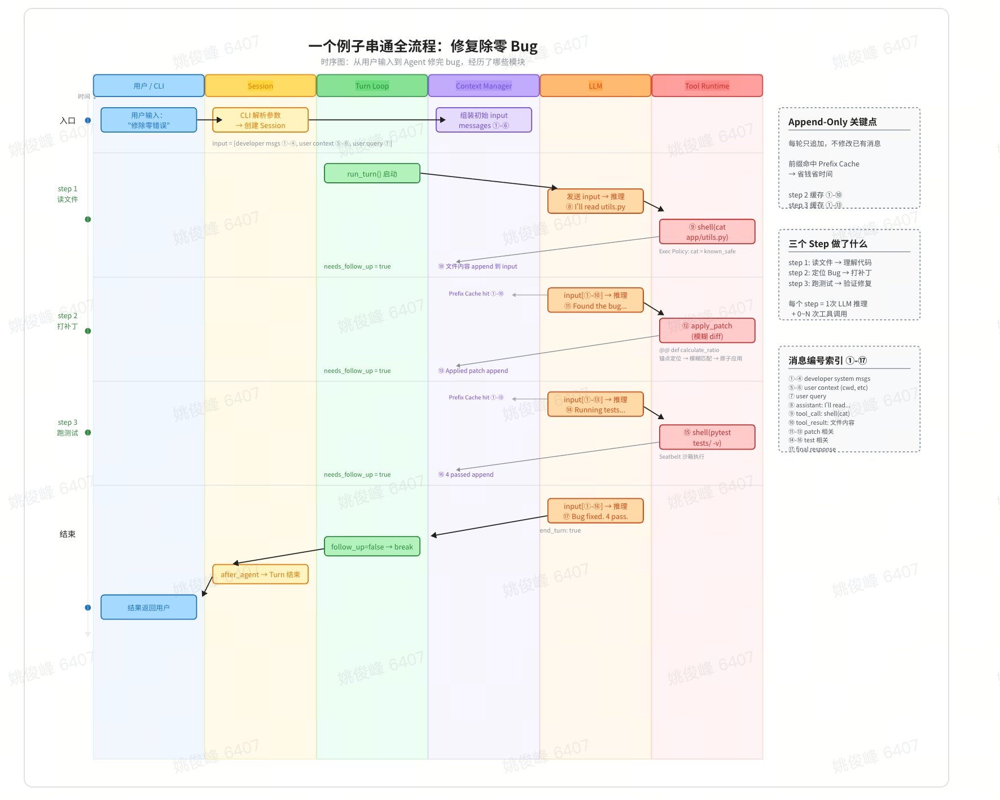

Agent Loop
先把它当成一个“围绕模型反复决策的控制循环”，而不是神秘的 AI 黑箱
一行定义
Agent Loop = 反复整理输入，让模型选择下一步动作；执行后把结果再并回输入，直到任务完成。
while (!done) {
input = 指令 + 历史消息 + 工具结果 + 当前约束
action = model(input)
if (action 是工具调用) {
result = run_tool(action)
input.append(result)
} else {
emit_final_answer(action)
done = true
}
}
工程上看，它就是一个循环编排器；产品上看，它就是“用户给目标，系统自己拆解并推进”。
和普通聊天的差异
给工程和产品的共同心智模型
Agent Loop（代码示意图）
这张图对应代码控制流：if (tool_call) { run; append; continue }，否则 final_message; done。
Thread · Turn · Step
把层级和执行逻辑放在一页：Thread 是容器，Turn 是一次用户交互，Step 是 Agent Loop 的一个动作
一张图讲清楚关系
Thread（任务生命周期） ├── Turn 1（用户请求） │ ├── Step 1 PLAN │ ├── Step 2 TOOL_CALL (run tests) │ ├── Step 3 OBSERVE │ ├── Step 4 EDIT_CODE │ ├── Step 5 TOOL_CALL (rerun tests) │ └── Step 6 ANSWER ├── Turn 2（用户追问） │ ├── Step 1 PLAN │ ├── Step 2 EDIT_CHANGELOG │ ├── Step 3 TOOL_CALL (lint) │ └── Step 4 ANSWER └── Turn 3 ...
Thread
生命周期容器承载多轮历史和上下文，可被 thread/start、thread/read、thread/resume 操作。
Turn
交互边界一次用户输入触发的一整次 Agent 执行，最终以一个可交付回复收束。
Step
决策粒度Turn 内一次“看状态并选动作”的迭代。动作可为 plan / tool_call / edit / ask_user / answer。
一个 Turn 内，Step 如何循环
while task_not_done:
step = model_decide_next_action(state)
if step == TOOL_CALL:
observation = run_tool()
state.append(observation)
continue
if step == EDIT:
modify_workspace()
continue
if step == ASK_USER:
break
if step == ANSWER:
break
这就是 step-level policy loop：Loop 发生在 Step，Turn 只是把这段循环包起来。
RL 在这三层里的落点
- state：thread memory + workspace state + tool outputs + current user goal。
- action：本次 Step 选什么动作（plan / tool_call / edit / ask_user / answer）。
- reward：通常在 Turn 结束时结算任务质量；再反向优化 Step 决策策略。
模型的输入是什么
先看两个具体例子：工具调用时输入/输出是什么，多轮对话时输入/输出是什么
role 与 type（分别列）
先看字段定义再看例子：这里先给最常见字段，后面例子按这个结构展开。
role（消息是谁发的）
userassistantdevelopersystemtype（这条内容是什么）
messagerole）。function_callname、arguments、call_id）。function_call_outputcall_id 回填。reasoningoutput[] 是不是 function_call；如果是，就执行工具并把 function_call_output 追加进下一次 input[]；如果不是，就通常是 assistant message 收束当前步骤。
例子 A：工具调用（单轮内）
tools = [{
"type": "function",
"name": "get_horoscope",
"description": "Get today's horoscope for an astrological sign.",
"parameters": {
"type": "object",
"properties": { "sign": { "type": "string" } },
"required": ["sign"]
}
}]
input_list = [
{"role": "user", "content": "What is my horoscope? I am an Aquarius."}
]
response = client.responses.create(
model="gpt-5",
tools=tools,
input=input_list,
)
input_list += response.output
for item in response.output:
if item.type == "function_call":
horoscope = get_horoscope(json.loads(item.arguments))
input_list.append({
"type": "function_call_output",
"call_id": item.call_id,
"output": json.dumps({"horoscope": horoscope})
})
response = client.responses.create(
model="gpt-5",
instructions="Respond only with a horoscope generated by a tool.",
tools=tools,
input=input_list,
)
对应官方语义：input_list += response.output，再把 function_call_output append 到 input_list 后发下一次 responses.create。
例子 B：多轮对话（previous_response_id）
const res1 = await client.responses.create({
model: 'gpt-5',
input: 'What is the capital of France?',
store: true
});
const res2 = await client.responses.create({
model: 'gpt-5',
input: 'And its population?',
previous_response_id: res1.id,
store: true
});
对应官方语义：第二轮通过 previous_response_id 直接引用上一轮上下文，不需要手动重传全部历史。
多轮 Thread 演示
点击“下一步”展示结构化层级：Thread → Turn → Step；Event 作为 Step 下的子层级（仅回填，不计 Step）
帮我找到 User 结构体，并加一个 email 字段
{type:"message", role:"user"}{type:"function_call", name:"exec_command", arguments:"rg \"struct User\""}{type:"function_call_output", call_id:"call_1", output:"found path ..."}[{type:"message", role:"user", content:"帮我找到 User 结构体，并加一个 email 字段"}, {type:"function_call_output", call_id:"call_1", output:"found path: app/user.rs"}]{type:"message", role:"assistant", content:"已完成修改"}顺便给这个字段补一个简单校验
[{type:"message", role:"user", content:"帮我找到 User 结构体，并加一个 email 字段"}, {type:"function_call_output", call_id:"call_1", output:"found path: app/user.rs"}, {type:"message", role:"assistant", content:"已完成修改"}, {type:"message", role:"user", content:"顺便给这个字段补一个简单校验"}]{type:"function_call", name:"exec_command", arguments:"apply patch + run test"}{type:"function_call_output", call_id:"call_2", output:"diff + test result"}[{type:"message", role:"user", content:"帮我找到 User 结构体，并加一个 email 字段"}, {type:"function_call_output", call_id:"call_1", output:"found path: app/user.rs"}, {type:"message", role:"assistant", content:"已完成修改"}, {type:"message", role:"user", content:"顺便给这个字段补一个简单校验"}, {type:"function_call_output", call_id:"call_2", output:"patch applied; tests passed"}]{type:"message", role:"assistant", content:"校验已补上并测试通过"}Thread 解决的是连续性，Turn 解决的是任务边界，Step 解决的是决策粒度。这三层拆开后，产品、工程、训练视角就能对齐。
结构口径：Turn 下有多个 Step；每个 Step 都有 input[] 与 output[]。input[] 采用 append-only 方式累积，function_call_output 作为回填事件被追加到序列末尾。
RL 与 Turn / Step 的关系
一句话先讲清：强化学习是在状态下选动作，拿环境反馈与奖励，再优化策略
一句话理解 RL
强化学习就是：在环境中观察状态（state），根据策略（policy）选择动作（action），环境反馈结果，再根据奖励优化策略。
RL 的最小闭环
State -> Policy -> Action -> Environment -> New State
↑
Reward
s_t -> π(a|s) -> a_t -> env -> s_{t+1}
↓
reward
代码 Agent 例子（严格对应 Step）
State
当前上下文 - 用户需求 - 已写代码 - 编译/测试结果
Policy：π(a|s)，在当前状态下选动作。
Action：write_code / call_tool / finish
Environment：执行动作后返回新状态（例如编译报错）。
Reward：例如 tests pass = +1，tests fail = 0。
数学目标与映射
策略：π(a | s)
目标：maximize expected reward，即 max E[R]
Step = action，Context = state，Model = policy。
最简总结
根据当前状态，用策略选动作；让环境反馈结果；再根据奖励优化策略。
Codex 的配置与 Prompt
这部分关注：哪些因素在“决定 loop 怎么跑”
Code Agent 架构总览（以 Codex 为原型）
将你的总览图放在这里，和下面“配置 / Prompt / 运行策略”对应阅读。

Context Manager 数据流（Codex 业务）
输入源如何经由 Context Manager 组装为 API Request，并在 token 压力下触发 handoff 压缩。

实际例子：一个例子串通全流程（修复除零 Bug）
例子改为：修复除零 Bug。重点看 Turn 启动时如何加载 md 约束、以及 3 个 Step 内 context 如何 append。
messages（append-only）= 历史已有 items + 本轮 user message + tool_output 回填事件

thread/read
- 读取 thread 历史与状态
turn/start
- 若携带覆盖参数(cwd/model/approval/sandbox/effort/personality/collaboration_mode)
则先执行 OverrideTurnContext
- 然后提交 UserInput 开始本轮
Turn 1 用户任务：修复“除零异常”
Step 1: 读文件 (shell/cat app/utils.py)
Step 2: 打补丁 (apply_patch)
Step 3: 跑测试 (shell/pytest tests/ -v)
最终: ANSWER（Bug fixed, 4 pass） -> turn/completed
Context Manager:
- 历史消息 append-only
- tool output 作为事件回填并 append
- turn 结果写回 thread
thread/read -> 读取 thread 历史与状态 turn/start -> 携带本轮用户消息 + 运行参数(cwd/model/approval/sandbox) step loop (turn 内) -> step: tool_call / edit / answer -> event: tool_output 回填 -> Context Manager 追加到 messages（append-only） turn/completed -> 写回本轮结果到 thread
- 不重写旧消息：消息索引持续增长（图中 0→17），历史主干 append-only。
- 启动顺序（代码）：
turn/start有覆盖时先OverrideTurnContext，再UserInput。 - 动态组装：每轮都会重建模型可见上下文（见
build_initial_context()）。 - 可恢复：即使中途 handoff 压缩，也保留关键约束与修复结论。
配置层加载顺序
/etc/codex/config.toml；Windows: %ProgramData%\\OpenAI\\Codex\\config.toml。${CODEX_HOME}/config.toml${PWD}/config.toml、父目录 .codex/config.toml、git root 下 .codex/config.toml（不可信目录会标记 disabled）。对应源码：core/src/config_loader/mod.rs::load_config_layers_state()，顺序是“后加覆盖先加”。
模型可见上下文（严格按代码）
- DeveloperInstructions::from_policy：由
sandbox_policy / approval_policy / exec_policy / cwd生成。 - developer_instructions：来自配置或 turn 覆盖（若存在）。
- collaboration mode 指令：来自
templates/collaboration_mode/default.md|plan.md。 - memory/apps/commit：按 feature 开关附加对应 developer 指令。
- UserInstructions：
# AGENTS.md instructions for ...形式的 user-role 消息。 - EnvironmentContext：以结构化 session prefix 消息追加。
AGENTS.override.md / AGENTS.md / fallback 文件，拼接后注入 UserInstructions；并非 developer-role 字段。对应 core/src/project_doc.rs + core/src/instructions/user_instructions.rs。
当前行为限制：cwd 改变后不保证自动刷新新的 AGENTS 内容（见 core/tests/suite/model_visible_layout.rs 的相关快照测试）。
对应拼装函数：core/src/codex.rs::build_initial_context()。